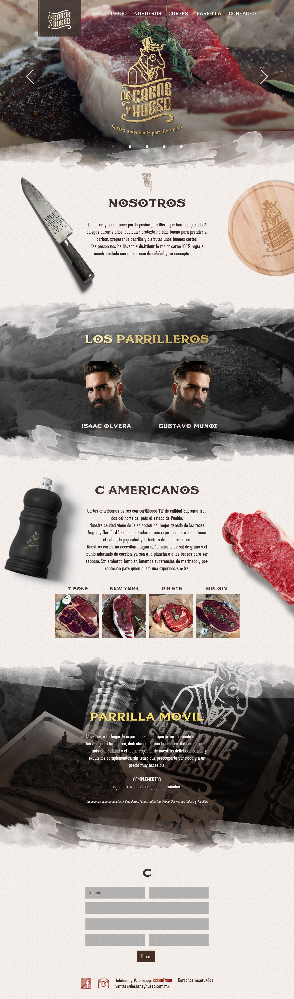

<div class="ajax-get" id="p-scroll">
	<div class="ajax-container">
		<hgroup>
			<h3>De Carne y Hueso</h3>
			<h4>Front-End, Maquetado, Funciones JS</h4>
			<h5><a href="http://decarneyhueso.com.mx/" target="_blank">http://decarneyhueso.com.mx/</a></h5>
		</hgroup>
		<div class="content">
			<p>Diseñador por <a href="https://www.behance.net/lorelei9n" target="_blank">Ana de la Cruz</a>. Participé en el desarrollo del sitio, la maquetación y creación de funciones en JS. Se desarrolló en SublimeText 3 con la ayuda de Prepros para procesar Stylus y minificar/unificar CSS/JS.</p>
			
		</div>
	</div>
</div>